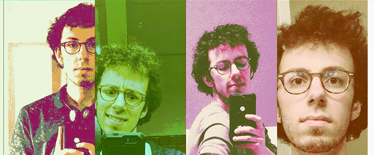

|

|
| Name: |
Jake Trower |
| Abilities (work): |
JavaScript/CSS (advanced), Java (advanced),
Python (intermediate), C#, WebGL, Unity, GML
|
| Abilities (other): |
drawing (intermediate), piano (intermediate), design, pixel art,
writing, running, bird calls
|
| History: |
- 2016+ - Google: front-end software engineer
- 2016 - University of Alabama: Master's of CS
- 2014 - Won #2
overall in Glitch Jam
- 2014 - University of Alabama:
- 2013 - Center for Advanced Public Safety: Student Developer
- (1992-2011) - Contemplating
- 1992 - Born
|
| Gallup Strengths: |
Restoration, Empathy, Input, Ideation, Adaptability |
| Personality: |
(I)ntroverted, i(N)tuitive, (F)eeling, (P)erceptive |
| Alignment: |
Neutral Good |
| Zodiac: |
Sagittarius (sun), Pisces (moon/rising) |